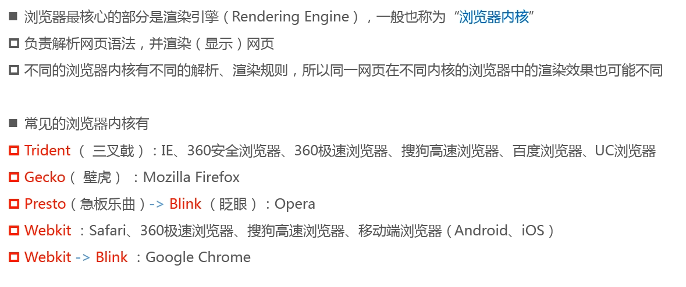
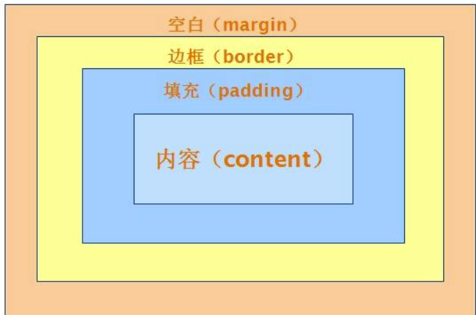

HTML+CSS
什么是前端
前端即网站前台部分，运行在PC端，移动端等浏览器上展现给用户浏览的网页。随着互联网技术的发展，HTML5，CSS3，前端框架的应用，跨平台响应式网页设计能够适应各种屏幕分辨率，完美的动效设计，给用户带来极高的用户体验。
前端技术一般分为前端设计和前端开发，前端设计一般可以理解为网站的视觉设计，前端开发则是网站的前台代码实现，包括基本的 HTML 和 CS S以及 JavaScript。
前端开发
前端开发工程师在整个开发流程中的位置
与前端开发工程师打交道的岗位如下： 前端工程师 把设计的设计稿转为可以运行的程序
- 产品经理 （需求经理）
- UI 设计师 (设计界面)
- 后端开发工程师 负责给前端提供数据
- 测试工程师 负责测试
什么是B/S | C/S
无论是前端工程师还是后台工程师，我们的内容都是开发软件
软件的分类：
C/S架构的软件
- C表示客户端，S表示服务器
- 客户端：
- 用户通过客户端来使用软件
- 服务器用来处理软件的业务逻辑
- 例子：
- QQ、office、360、王者
- 特点：
- 1、C/S架构的软件必须要安装后才可以使用
- 2、C/S架构的软件更新时，服务器和客户端都需要更新
- 3、C/S架构的软件无法跨平台使用
- 4、C/S架构的软件客户端和服务器间的通信采用自有的协议，安全性较好
- B/S 我们主要从事的是B/S的软件的开发
- B表示浏览器，S同样表示服务器 java、NodeJs
- B/S本质也是C/S,只不过B/S使用浏览器作为软件的客户端
- B/S实际上就是一个一个的网站，我们可以通过访问一个网站来使用软件
- 例子：
- 京东、淘宝、12306
- 特点：
- 1、不需要安装可以直接使用
- 2、软件更新，客户端无需更新
- 3、软件可以跨平台使用
- 4、B/S架构的软件，客户端和服务器间的通信采用公共的HTTP协议，安全性较差
C/S结构： Client/Server（客户机/服务器）结构，客户端程序直接运行在操作系统上，需要安装。
B/S结构： Browser/Server（浏览器/服务器）结构，客户端程序运行在浏览器上，无需安装。
完善的软件体系
软件开发流程

我们需要将设计师的设计转换为代码，并且调用后台接口动态显示网页数据。
我们需要和设计师沟通，需要和产品经理沟通，需要和后台工程师沟通。
我们的编写的网页会在整个项目的最前端由用户查看。
开发工具

浏览器的发展以及内核
主流浏览器：
其他浏览器： 360安全浏览器、360极速浏览器、搜狗浏览器、UC浏览器、猎豹浏览器、夸克浏览器、海豚浏览器、傲游浏览器、QQ浏览器、2345浏览器 等
浏览器是前端开发中的核心工具，我们编写的所有内容都需要通过浏览器来显示
浏览器的主要作用便是将我们所编写的代码渲染为可供用户查看的页面
换句话说，我们所编写的代码最终显示的效果实际上是由浏览器来决定的
而我们要做的事情就是确保一个网页在不同的浏览器中有着相同的显示效果
万维网联盟（W3C）

万维网联盟World Wid Web Consortium，又称W3C理事会，是万维网的主要国际标准组织
该组织试图制作一套标准来解决网络应用在不同平台间的兼容问题
定义了网页中的
HTML、CSS、DOM、HTTP、XML等标准。W3C是前端开发中最最重要的一个组织，我们所开发的应用都需要遵循W3C的规范W3C
HTML
什么是HTML
- HTML是用来制作网页的标记语言
- HTML是Hypertext Markup Language的英文缩写,即超文本标记语言
- HTML语言是一种标记语言,不需要编译,直接由浏览器执行
- HTML文件是一个文本文件,包含了一些HTML元素,标签等
- HTML文件必须使用.html或.htm为文件名后缀
- HTML是大小写不敏感的,HTML与html是一样的
- HTML是由W3C的维护的
- HTML 是通向 WEB 技术世界的钥匙。
HTML（Hypertext Markup Language）
超文本标记语言它负责网页的三个要素之中的
结构。HTML使用
标签的的形式来标识网页中的不同组成部分。所谓超文本指的是超链接，使用
超链接可以让我们从一个页面跳转到另一个页面。
<!DOCTYPE html>
<!--html标签是网页的根标签，网页中的所有内容都应该写在根标签中-->
<html>
<!--head是html的子元素 head中的内容不会在网页中直接显示，他用来对网页进行配置-->
<head>
<!--meta标签，表示网页中的一些元数据-->
<meta charset="UTF-8">
<!--title是网页的标题，他会显示在浏览器的标题栏-->
<title>网页标题</title>
</head>
<!---body也是html的子元素，网页中所有的可见内容都应该写在body中-->
<body>
<!--h1是一级标题标签-->
<h1>网页正文</h1>
</body>
</html>常见属性
<!--文档声明，告诉浏览器网页的版本-->
<!DOCTYPE html>
<html>
<head>
<!--
自结束标签 meta用来设置网页的基本信息指定网页的编码字符集(避免乱码问题)
表示网页中的一些元数据
name：要设置的数据的名字
content：要设置的数据的值
http-equiv：设置Http协议的响应头
-->
<meta name="keywords" content="java,大数据,前端" charset="UTF-8">
<title>前端开发工程师</title>
</head>
<body>
<!--
在开始标签中可以为元素添加属性
属性可以用来设置元素如何显示其中的内容
属性是一个明值对结构：属性名="属性值"
font:规定文本的颜色 大小 不推荐使用
-->
<h1>这是我的<font color="yellow" size="6">第一个</font>网页</h1>
</body>
</html>HTML的发展
HTML是从2.0版本开始的，实际上没有1.0的官方规范,在1993年6月作为互联网工程工作小组（IETF）工作草案发布（并非标准） HTML 2.0——1995年11月作为RFC 1866发布，在RFC 2854于2000年6月发布之后被宣布已经过时
HTML 3.2——1997年1月14日，W3C推荐标准
HTML 4.0——1997年12月18日，W3C推荐标准
HTML 4.01（微小改进）——1999年12月24日，W3C推荐标准
HTML 5——2014年10月28日，W3C推荐标准HTML 基本语法
1 HTML 标签
标签是HTML中最基本单位,也是最重要组成部分
通常要用两个角括号括起来:<和>
标签都是闭合的（两种形式：成对与不成对）
双标签（成对）: <标签名>内容</标签名> 如：<table></table> 即分起始和结束
单标签（不成对）: <标签名 />; 如： <br/>、<hr/>
标签是大小写无关的,<body>;跟<BODY>表示意思是一样的，标准推荐使用小写，这样符合XHTML标准。
对于HTML标签来讲，最重要的是语义。2 HTML 标签属性
HTML属性一般都出现在HTML的开始标签中, 是HTML标签的一部分。
标签可以有属性,它包含了额外的信息.属性的值一定要在双引号中。
标签可以拥有多个属性。
属性由属性名和值成对出现。
语法格式如下：
<标签名 属性名1="属性值" 属性名2="属性值" ... 属性名N="属性值">
<!– 输出内容… -->
</标签名>3 如何掌握一个 HTML 标签
要掌握一个 HTML 标签，我们需要记住以下几点：
① 标签的语义、作用。
② 该标签有哪些属性，属性的值是怎样的。
③ 该标签是单标签还是双标签。4 HTML代码格式
任何回车或空格在源代码中都是不起作用， 所以在编写HTML代码时，都可以使用回车或者空格进行代码排版， 这样可以使代码清晰，也便于团队合作。必须保持严格的缩进规则，以Tab键为准。
<!DOCTYPE html>
<html lang="en">
<head>
<meta charset="UTF-8">
<title>网站</title>
</head>
<body>
<div class="container">
<div class="header">
<div class="logo"></div>
<div class="nav"></div>
</div>
<div class="main"></div>
</div>
</body>
</html>5 HTML 注释
<!-- 注释内容 -->
<!--
这里全是注释
都是注释
-->6 文档声明
你可使用此声明在 Internet Explorer 6 及以后版本中切换为严格的标准兼容模式。
<!DOCTYPE HTML PUBLIC "-//W3C//DTD HTML 4.01//EN" "http://www.w3.org/TR/html4/strict.dtd">
<!DOCTYPE html PUBLIC "-//W3C//DTD XHTML 1.0 Transitional//EN"
"http://www.w3.org/TR/xhtml1/DTD/xhtml1-transitional.dtd">
<!DOCTYPE html>HTML 常用标签
语义化标签
header 表示网页的头部，头部可以包含logo、导航、搜索框、广告条
main 表示网页的主体，一个网页中只有一个main标签
footer 表示网页的底部，底部可以包含版权声明
nav 表示导航
article 表示网页中一块内容（一般是一些文字的信息）
aside 表示侧边栏（辅助信息）
section 表示一个区块
hgroup 表示一个标题组
div 表示一个区块
p 表示页面中的一个段落
blockquote 长引用
hr表示水平线
- 以上的元素都属于块元素，块元素在页面中会独占一行
- 在网页中一般通过块元素进行布局
自己单独占一行；设置宽高起作用,在不设置宽度的情况下,和父元素的宽度一样。
具有块级显示模式的元素称之为块级元素。
常见的块级元素有：div、h1-h6、 ul、 ol、 li、 dl、 dt、 dd、 hr、 p、 form 等
em 强调（语气）
strong 强调重要性 有加粗效果
i 斜体
b 加粗
q 短引用
span 一般用于在网页中选中文字
br 标签来进行换行
- 以上这些元素都是行内元素（内联元素），在页面中不会独占一行
- 行内元素主要用来包裹文字设置效果
自己不独占一行，一行可以有多个；设置宽高不起作用,宽高靠内容撑开。
具有行内显示模式的元素称之为行内元素。
常见的行内元素有：span、a 、strong、 em、 ins、 del 等1 主体结构标签
| 标签名 | 标签的语义和作用 | 标签的属性 | 是单标签还是双标签 |
|---|---|---|---|
| html | 页面最外层 | 双 | |
| head | 页面头部 | 双 | |
| body | 页面主体 | 双 |
2 HEAD 标签
| 标签名 | 标签的语义和作用 | 标签的属性 | 是单标签还是双标签 |
|---|---|---|---|
| title | 页面标题 | 双 | |
| meta | 页面元信息： ① 设置字符集编码 ② 设置关键字和描述信息 | charset：值是字符编码 name: 值是 keywords 或 description content: 值根据 name 属性的值填写 | 双 |
| base | 为页面上的所有链接规定默认地址或默认目标 一个页面最多只能使用一个 base 元素，用来提供一个指定的默认目标。 | href: 规定页面中所有相对链接的基准 URL。 target: 规定页面中所有的超链接和表单在何处打开。值为_blank/_self |
单 |
| style | 定义 HTML 文档的样式信息。 该标签也可放在 head 之外。 | type: 规定样式表的 MIME 类型，默认text/css |
双 |
| link | 引入文档与外部资源的关系 该标签也可放在 head 之外。 | href：定义被链接文档的位置 rel：定义当前文档与被链接文档之间的关系。 type：规定样式表的 MIME 类型，默认text/css |
双 |
| script | 定义客户端脚本，比如 JavaScript。script 元素既可以包含脚本语句，也可以通过 src 属性指向外部脚本文件。 该标签也可放在 head 之外。 | src：规定外部脚本的 URL type: 规定脚本的 MIME 类型，默认text/javascript |
双 |
link 标签可以用于引入外部 css 文件或者引入页面窗口小图标
<!--导入外部CSS文件-->
<link rel="stylesheet" type="text/css" href="style.css"></link>
<!--导入页面窗口小图标--->
<link rel="shortcut icon" type="images/x-icon" href="http://www.baidu.com/favicon.ico">
附：常用 MIME 类型
text/html
text/xml
image/jpeg
image/png
image/gif
image/x-icon3 格式排版标签
| 标签名 | 标签的语义和作用 | 标签的属性 | 是单标签还是双标签 |
|---|---|---|---|
| h1~h6 | 标题 | 双 | |
| p | 段落 | 双 | |
| hr | 分割线 | 单 | |
| br | 换行 | 单 | |
| pre | 按原文显示 | 双 | |
| div | 没有任何语义，用于页面布局 | 双 |
4 文本标签
| 标签名 | 标签的语义和作用 | 标签的属性 | 是单标签还是双标签 |
|---|---|---|---|
| em | 表示强调，通常为斜体字 | 双 | |
| strong | 表示强调(语气更强)，通常为粗体字 | 双 | |
| del | 定义文档中已删除的文本。 | 双 | |
| ins | 定义已经被插入文档中的文本。 | 双 | |
| sub | 文字下标字字体。 | 双 | |
| sup | 文字上标字体 | 双 |
HTML 功能标签
1 图片
1.1 img 标签
<img src="图片地址" title="" alt="">
属性：
alt -- 代表图像的替代文字
src -- 代表一个图像源(就是图像的位置)
border – 代表图片边框的宽度
height -- 代表一个图像的高度
width -- 代表一个图像的宽度1.2 常见图片格式
GIF -- 最多支持256色,支持透明,支持多帧动画显示效果.
JPEG -- 支持多种颜色,可以有很高的压缩比,使用了有损压缩,不支持透明,不支持动画效果.
PNG -- 是一种新的图片技术,可以表现品质比较高的图片,使用了无损压缩,支持透明,不支持动画.2 超链接和锚点
2.1 超链接
<a href='要跳转的地址'>超链接文字</a>
① a 标签的属性
href -- 代表一个url链接源(就是链接到什么地方)
url 除了是网页外,还可以是其它的文件(如文本文件,pdf文件等)。
url 还可以是指向HTML文件中的一个位置。
url 还可以是Email地址。
target -- 用来指出哪个窗口或框架应该被此链接打开
target=_blank： 将链接内容在新的浏览窗口中打开。
target=_self： 将链接的内容，显示在目前的窗口中。 (默认)
target=_parent：将链接的内容，当成文件的上一个画面。
target=_top：这个参数可以解决新内容被旧框窗包围的困扰，使用这参数，会将整个画面重新显示成链接的画面内容。
② 超链接示例
网站链接： <a href="http://www.atguigu.com">尚硅谷</a>
电子邮件链接： <a href="mailto:fuming@atguigu.com">写信给我</a>
电话 <a href="tel:10086">10086</a>
短信 <a href="sms:10086">发短息给我</a>2.2 锚点
① 定义锚点
用 <a name=“”> 定义，例如：<a name=“here1”>第一部分</a>，
使用标签配合 id 属性定义，例如 <div id="header"></div>
② 跳转到锚点
本页面内跳转 <a href="#锚点名">跳转</a>
跳转到指定页面指定锚点 http://www.lampuser.com/index.html#section23. 列表标签
| 标签名 | 标签的语义和作用 | 标签的属性 | 是单标签还是双标签 |
|---|---|---|---|
| li | 列表项，被嵌套在 ul 或者 ol 的里面 | 双 | |
| ul | 无序列表 | 双 | |
| ol | 有序列表 | 双 | |
| dl | 自定义列表 | 双 | |
| dt | 列表主题 | 双 | |
| dd | 列表描述，对列表主题的描述 | 双 |
4. 表格标签
注意：
thead、tbody、tfoot 都有属性 align、valign
tr、th、td 都有属性 width、height、align、valign5 表单标签

6 框架标签
| 标签名 | 标签的语义和作用 | 标签的属性 | 是单标签还是双标签 |
|---|---|---|---|
| iframe | 规定一个内联框架 | name 定义iframe的名称 width 定义iframe宽度 height 定义height高度 frameborder 是否显示边框，值为0不显示 src 要显示文档的url | 双 |
曾经是项框架分帧的还有 <frameset> 和 <frame> 标签，但新标准都已经不推荐使用
HTML 全局属性
| 属性名 | 含义 |
|---|---|
| class | class 规定元素的一个或多个类名（引用样式表中的类） class 属性不能在以下 HTML 元素中使用：base, head, html, meta, param, script, style 以及 title。 |
| id | 规定元素的唯一 id。 |
| dir | 规定元素中内容的文本方向。 注意：dir 属性在以下标签中无效：base, br, frame, frameset, hr, iframe, param 以及 script。 |
| style | 规定元素的行内 CSS 样式。 |
| title | 规定有关元素的额外信息。 |
| lang | 规定元素内容的语言，值是语言代码，如 cn、zh。 注意：lang 属性在以下标签中无效：base, br, frame, frameset, hr, iframe, param 以及 script。 |
URL 和路径
1 URL
1.1 什么是 URL
统一资源定位符（URL，英语 Uniform Resource Locator 的缩写），它的英文简称叫做 URL。也被称为网页地址，是因特网上标准的资源的地址。它最初是由蒂姆·伯纳斯－李发明用来作为万维网的地址的，现在它已经被万维网联盟编制为因特网标准RFC1738了。
URL 就是表示互联网上一个资源的地址。
资源包括网页、图片、音乐、视频、样式文件、脚步文件以及其他各种文件等。1.2 URL 的格式
scheme://host.domain:port/path/filename
scheme - 定义因特网服务的类型。最常见的类型是 http
host - 定义域主机（http 的默认主机是 www）
domain - 定义因特网域名，比如 w3school.com.cn
port - 定义主机上的端口号（http 的默认端口号是 80）
path - 定义服务器上的路径（如果省略，则文档必须位于网站的根目录中）
filename - 定义文档/资源的名称2 相对路径和绝对路径
2.1 HTML 中用到路径的地方
使用 img 标签导入图片
a 标签指定链接到页面地址
link 标签引入 css 文件或图标文件
script 标签引入 js 文件2.2 绝对路径
① 本地绝对路径
C:\Library\200524\index.html
后端程序可以用来读取文件
② 网络绝对路径
https://www.baidu.com/img/pc_cc75653cd975aea6d4ba1f59b3697455.png
前端地址用绝对路径，就使用网络的绝对路径。
网络绝对路径其实就是URL。2.3 相对路径
① 要引用的文件在同级或者下一级
./
直接写
② 要引用的文件在上一级或者更上级
../ 上级目录
../../ 上上级目录
../../../ 上上上级目录Meta 元信息
我们可以使用 <meta> 标签定义 HTML 页面的元信息。1 Meta 标签属性的使用规则
content 属性定义与 http-equiv 属性或 name 属性相关的元信息。
name 属性把 content 属性关联到一个名称。
name 属性常见的值：
author
description
keywords
generator
revised
robots
others
http-equiv 把 content 属性关联到 HTTP 头部信息。
http-equiv 属性常见的值：
content-type expires refresh set-cookie
charset 属性定义字符集编码。
常见字符集编码：
GB2312
GBK
UTF8
编码字符集
<meta charset="utf-8"> HTML5 支持 HTML5向下兼容
<meta http-equiv="content-type" content="text/html;charset=utf-8" /> HTML 4支持
网页关键字：
<meta name="keywords" content="8-12个以英文逗号隔开的单词/词语">
网页描述信息
<meta name="description" content="80字以内的一段话，与网站内容相关">
所有搜索引擎，抓取这个页面、爬行链接、禁止快照：
<meta name="robots" content="index,follow,noarchive">
all：文件将被检索，且页面上的链接可以被查询；
none：文件将不被检索，且页面上的链接不可以被查询；
index：文件将被检索；
follow：页面上的链接可以被查询；
noindex：文件将不被检索，但页面上的链接可以被查询；
nofollow：文件将被检索，但页面上的链接不可以被查询；
noarchive：文件将被检索，但禁止保存快照；
网页作者：
<meta name="author" content="obama">
网页网页生成工具
<meta name="generator" content="Sublime Text3">
定义页面最新版本
<meta name="revised" content="David, 2008/8/8/" />
网页版权信息：
<meta name="copyright" content="2009-2014©版权所有">
网页刷新信息：(10秒后跳转到百度页面)
<meta http-equiv="refresh" content="10;url=http://www.baidu.com">CSS
什么CSS
层叠样式表 (Cascading Style Sheets)
CSS可以用来为网页创建样式表，通过样式表可以对网页进行装饰。
所谓层叠，可以将整个网页想象成是一层一层的结构，层次高的将会覆盖层次低的
而css就可以分别为网页的各个层次设置样式
-层叠样式表
网页实际上是一个多层的结构，通过css可以分别为网页的每一个层设置样式
而最终我们能看到的只是网页的最上边一层CSS常用属性
基本语法
CSS的样式表由一个一个的样式构成，一个样式又由选择器和声明块构成。
语法：
选择器：通过选择器可以选中页面中的指定元素
比如：p的作用就是选中页面中的所有p元素(标签)
声明块：通过声明块来指定要为元素设置的样式
声明块由一个一个的声明组成
一个样式名对应一个样式值，名和值之间以:连接，以;结尾
选择器 {样式名:样式值；样式名:样式值 ; }
p {
color: red;
font-size: 40px;
}行内样式(内联样式)
可以直接将样式写到标签内部的style属性中，这种样式不用填写选择器，直接编写声明即可。
<p style="color: red;font-size: 30px"></p>
这种方式编写简单，定位准确。但是由于直接将css代码写到了html标签的内部，导致结构与表现耦合，同时导致样式不能够复用，所以这种方式我们不使用。内部样式表
可以直接将样式写到<style>标签中。
<style>
p{color:red; font-size: 30px;}
</style>
这样使css独立于html代码，而且可以同时为多个元素设置样式，这是我们使用的比较多的一种方式。
但是这种方式，样式只能在一个页面中使用，不能在多个页面中重复使用。外部样式表
可以将所有的样式保存到一个外部的css文件中，然后通过<link>标签将样式表引入到文件中。
<link rel="stylesheet" type="text/css" href="style.css">
这种方式将样式表放入到了页面的外部，可以在多个页面中引入，同时浏览器加载文件时可以使用缓存，这是我们开发中使用的最多的方式。CSS基本长度单位
em 倍数 默认字体大小的倍数
px：pixel，像素，屏幕上显示的最小单位，用于网页设计，直观方便；%
百分比
pt：point，是一个标准的长度单位，1pt＝1/72英寸，用于印刷业，非常简单易用；
cm 厘米
mm 毫米颜色
RGB十进制数字表示颜色
数字（1-255） rgb(255,0,0)
百分比(1-100) rgb(100%,0,0)
RGB十六进制表示
#rrggbb
#rgb 简写
十六进制颜色
用的最多的颜色是十六进制符号。一个颜色值，比如：#6600FF实际上包含了三组十六进制的数字。
上边的例子中66代表红色的浓度，00代表绿色的浓度，FF代表了蓝色的浓度。最后的颜色是由这些指定浓度的红绿蓝混合而成的。
如果每一组数中的两个数字都相同，就可以把十六进制的数字缩短为只有3个字符，如将#6600FF缩短为#60FCSS选择器
基本选择器
选择器（selector），会告诉浏览器：网页上的哪些元素需要设置什么样的样式。
比如：p这个选择器就表示选择页面中的所有的p元素，在选择器之后所设置的样式会应用到所有的p元素上。元素选择器
元素选择器（标签选择器），可以根据标签的名字来从页面中选取指定的元素。
语法：
标签名 {}
比如p则会选中页面中的所有p标签，h1会选中页面中的所有h1标签。类选择器
类选择器，可以根据元素的class属性值选取元素。
语法：
.className {}
比如.hello会选中页面所有class属性为hello的元素。ID选择器
ID选择器，可以根据元素的id属性值选取元素。
语法：
#id {}
比如#box会选中页面中id属性值为box的元素，和class属性不同，id属性是不能重复的。通用选择器
通用选择器，可以同时选中页面中的所有元素。
语法：
*{ }组合选择器
群组选择器(并集选择器)
群组选择器，可以同时使用多个选择器，多个选择器将被同时应用指定的样式。
语法：
选择器1,选择器2,选择器3 { }
比如p,.hello,#box会同时选中页面中p元素，class为hello的元素，id为box的元素。多选择器（交集选择器）
选择类名是xxx的li的元素
div.item {
}
.item.list-item {
}
div#container {
}复合选择器
复合选择器，可以同时使用多个选择器，这样可以选择同时满足多个选择器的元素。
语法：
选择器1选择器2{}
例如div.box1会选中页面中具有box1这个class的div元素。选择器权重
不同的选择器有不同的权重值：
内联样式：权重是 1000
id选择器：权重是 100
类、属性、伪类选择器：权重是 10
元素选择器：权重是 1
通配符：权重是 0
计算权重需要将一个样式的全部选择器相加，比如上边的body h1的权重是20，h1的权重是10，所以第一个选择器设置的样式会优先显示。
标签选择器 < 类选择器 < ID选择器 < 行内样式 < !important
1 10 100 1000 无穷大CSS 常用属性
1 字体属性
font
font:字体风格[字体加粗]<字体大小>[/行高]<字体族科>
font-family 字体族科 宋体|微软雅黑
font-family:"Arial","Helvetica",sans-serif;(非衬线字体)
font-size 字体大小
font-style 字体风格 normal | italic | oblique (斜体)
font-weight 字体加粗 normal | bold | lighter 数字 设置粗体字
font-variant 字体变形 normal | small-caps2 文字颜色
color 设置文字颜色3 文本属性
letter-spacing 字母间隔 值为长度，可以是负值
word-spacing 词的间距(通过空格识别)
text-decoration 文字修饰
underline
overline
line-through
none(默认)
text-align 横向排列 left | right | center
vertical-align 垂直对齐方式
baseline： 将支持valign特性的对象的内容与基线对齐
sub： 垂直对齐文本的下标
super： 垂直对齐文本的上标
top： 将支持valign特性的对象的内容与对象顶端对齐
text-top： 将支持valign特性的对象的文本与对象顶端对齐
middle： 将支持valign特性的对象的内容与对象中部对齐
bottom： 将支持valign特性的对象的文本与对象底端对齐
text-bottom： 将支持valign特性的对象的文本与对象顶端对齐
<percentage>： 用百分比指定由基线算起的偏移量。可以为负值。基线对于百分数来说就是0%。
<length>： 用长度值指定由基线算起的偏移量。可以为负值。基线对于数值来说为0。（CSS2）
text-indent 文本缩进 2em(2个字) 50px
line-height 设置行间距离 不允许使用负值4 背景属性
background
background:<背景颜色>|<背景图像>|<背景重复>|<背景附件>|<背景位置>
例：background:red url('./123.png') no-repeat 100px 10px;
background-color 设置背景色，或设置为transparent（透明）
background-image 背景图片 url 或者 none
background-repeat 背景重复 repeat | repeat-x | repeat-y | no-repeat
background-attachment 背景附件 scroll | fixed
background-position 背景位置
background-position: 水平方向 垂直方向
background-position:left top;
background-position:100px 100px;
left | center | right (横向)
top | center | bottom (纵向)
或者使用百分比或者数值 5 列表属性
list-style-type
disc 实心点
circle 圆圈
square 小方框
decimal 数字
lower-roman 小写罗马字
upper-roman 大写罗马字
lower-alpha 小写字母
upper-alpha 大写字母
list-style-position 位置
inside 标示在li里面
outside 标示在li外面
list-style-image 使用图片 url(./123.gif)
list-style 复合属性
list-style: type position image
list-style: none6 表格属性
table-layout 表格布局方式
auto(默认) 布局将基于各单元格的内容，换言之，可能你给某个单元格定义宽度为100px，但结果可能并不是100px。表格在每一单元格读取计算之后才会显示出来，速度很慢
fixed 平布局是仅仅基于表格的宽度，表格边框的宽度，单元格间距，列的宽度，而和表格内容无关。也就是说，内容可能被裁切
border-collapse 表格的行和单元格的边是合并还是独立
separate (默认) 独立
collapse 合并
border-spacing 当表格边框独立时，行和单元格的边框在横向和纵向上的间距
caption-side caption 在table上面还是下面
top
bottom盒子模型
文档流
文档流
-网页是一个多层的结构，一层落着一层
-通过css可以分别为每一层来设置样式
作为用户来讲，只能看到最顶上一层
这些层中，最底下的一层称为文档流，文档流是网页的基础
我们所创建的元素默认都是在文档流中进行排列
-对于我们元素主要有两个状态
-在文档中
-不在文档流中
-元素在文档流有什么特点
-块元素
-块元素会在页面中独占一行
-默认宽度是父元素的全部(会把父元素撑满)
-默认高度是被内容撑开
-行内元素(内联样式)
-行内元素不会独占页面一行，只占自身的大小
-行内元素在页面中左右水平排列
-行内元素的默认宽度和高度都是被内容撑开盒子是什么
CSS处理网页时，它认为每个元素都包含在一个矩形盒子里。
为什么是矩形盒子呢？
因为如果把所有的元素都想象成盒子，那么我们对网页的布局就相当于是摆放盒子。
我们只需要将相应的盒子摆放到网页中相应的位置即可完成网页的布局。显示模式转换(文档流)
可以通过给元素设置 display 属性，来改变元素的显示模式
| 值 | 描述 |
|---|---|
| none | 隐藏元素（元素将在页面中完全消失） |
| block | 设置元素为块元素 |
| inline | 默认。设置元素为行内元素 (内联元素) |
| inline-block | 设置元素为行内块元素。（CSS2.1 新增的值） |
盒子模型
一个盒子模型有以下四部分组成：
Margin(外边距) 清除边框外的区域，外边距是透明的。
Border(边框) 围绕在内边距和内容外的边框。
Padding(内边距) 清除内容周围的区域，内边距是透明的。
Content(内容) 盒子的内容，显示文本和图像。
一个盒子实际的大小 = 内容的大小 + padding + border宽度。
外边距不计入盒子的大小。内容区
内容区决定这个盒子能装多少子元素
① 设置内容区尺寸 css 属性
width 内容区宽度
max-width 内容区最大宽度
min-width 内容区最小宽度
height 内容区高度
max-height 内容区最大高度
min-height 内容区最小高度
② 内容区默认大小
如果没有设置宽度，块级元素会根据父元素大小自动计算，行内元素和行内块元素宽度根据内容大小计算。
如果没有设置高度，块级、行内、行内块都会根据内容大小计算。
width 默认是 auto,auto分为4种情况：
fill-available：充分利用可使用空间（块标签）
fit-content: 收缩到合适（浮动，定位）
min-content: 收缩到最小（表格中常见）
max-content:超出容器限制（英文单词较长，或者设置了不换行，就会超出容器限制）
height 的默认值也是 auto，其高度由内部元素堆叠而成，也就是内部元素撑起来的。
块级元素的默认宽度如何根据父元素宽度自动计算：
元素设置了外边距、内边距、边框都会压缩该元素内容区域的宽度。
内容宽度 = 父元素的内容宽度 - margin（子元素） - padding（子元素） - border（子元素）。
③ 设置内容区溢出
overflow 设置内容溢出方式
值 描述
visible 默认值。内容不会被修剪，会呈现在元素框之外。
hidden 内容会被修剪，隐藏超出盒子的内容
scroll 内容会被修剪，但是浏览器会添加滚动条以便查看其余的内容。
auto 如果内容被修剪，则浏览器会根据需要添加滚动条以便查看其余的内容。
inherit 规定应该从父元素继承 overflow 属性的值。
overflow-x 设置水平方向的内容溢出方式，值与overflow属性相同。
overflow-y 设置垂直方向的内容溢出方式，值与overflow属性相同。内边距
顾名思义，内边距 padding 也叫补白或填充，是边框和内容之间的空间。
① padding 相关属性
padding 设置各个方向的内边距，复合属性，可以指定多个值。
padding-left 设置左内边距。
padding-right 设置右内边距。
padding-top 设置上内边距。
padding-bottom 设置下内边距。
例如：
padding:10px 20px 30px 40px
这样会设置元素的上、右、下、左四个方向的内边距。
padding:10px 20px 30px;
分别指定上、左右、下四个方向的内边距
padding:10px 20px;
分别指定上下、左右四个方向的内边距
padding:10px;
同时指定上左右下四个方向的内边距
同时在css中还提供了padding-top、padding-right、padding-right、padding-bottom分别用来指定四个方向的内边距。
② padding 设置规则
padding 不支持负值，也不能设置为“auto”。
给行内元素设置 padding 的时候，水平方向非常正常，但是垂直方向设置了 padding 之后不能撑开元素的距离。边框
边框：边框属于盒子的边缘，边框里面属于盒子内部，出了边框都是盒子的外部
① 边框相关属性
border 复合属性 border-left|border-right|border-top|border-bottom
border: 边框宽度 边框样式 边框颜色边框的样式
border-style 边框线风格 border-top-style | border-right-style | border-bottom-style | border-left-style
dotted 点线
dashed 虚线
solid 实线
double 双实线
groove 槽状线
ridge 脊线
inset 内嵌效果
outset 外凸效果
border-color 边框颜色 border-left-color | border-right-color | border-top-color | border-bottom-color
border-width 边框宽度 border-left-width | border-right-width | border-top-width | border-bottom-width
粗细 样式 颜色
border-left:1px solid red;
② 边框位置
边框不会显示在 margin 中。
背景颜色在边框中显示（实线的时候，我们看不到）。
背景图片原点没有从边框开始 而是从padding开始的，但是可能会平铺到边框中。外边距
外边距是元素边框与周围元素相距的空间。
① 外边距相关属性
margin 设置各个方向的内边距，复合属性，可以指定多个值。
margin-left 设置左外边距。
margin-right 设置右外边距
margin-top 设置上外边距
margin-bottom 设置下外边距
margin:0 auto 水平居中
margin-top和margin-left是改变自己的位置
margin-right和margin-bottom是挤别人 不移动自己
/* margin 的复合属性 */
/* 一个值 上下左右*/
margin:10px;
/* 两个值 上下 左右*/
margin:10px 20px;
/* 三个值 上 左右 下*/
margin:10px 20px 30px;
/* 四个值 上 右 下 左*/
margin: 10px 20px 30px 40px;
② margin 设置规则
margin 可以设置为负值。
对于行内元素，只有水平方向设置 margin 是有效的。ma
margin 为负值的情况：
margin-left为负：
元素向左移动，并且原来的位置不保留（后边元素会紧跟上一起移动）；
元素向左移动，并不会挤到前边的兄弟元素，而是覆盖前边的兄弟元素。
margin-right为负：
元素视觉大小不发生变化;
但是元素实际所占用的空间变小，后边元素会跟上来或者是撑不开父级宽度。
margin-top为负：
元素向上移动，并且原来的位置不保留（下边元素会紧跟上一起移动），
元素向上移动，并不会挤到上边的兄弟元素，而是覆盖上边的兄弟元素
margin-bottom为负：
元素视觉大小不发生变化；
但是元素实际所占用的空间变小，下边元素会跟上来或者是撑不开父级高度。
③ margin 塌陷
在一个元素里，第一个子元素的 margin-top 会塌陷给父级；最后一个子元素的 margin-bottom 会塌陷给父级。
解决 margin塌陷的方法：
给父元素设置一个边框 边框的宽度不能为 0 ; 防止影响视觉，可以设置透明（transparent）颜色。
父元素开启BFC（块级格式化上下文），开启 BFC 的方法很多，如设置 overflow:hidden。
④ margin 合并
左右两个兄弟元素，分别设置 margin-right（前面的元素） 和 margin-left（后面的元素），元素之间的间距是 margin-right 和 margin-left 之和。
上下两个兄弟元素，分别设置 margin-bottom（前面的元素）和 margin-top（后面的元素）, 两个元素之间的间距会取 margin-bottom 和 margin-top 之间最大的那个值，称之为 margin 合并外边距折叠
垂直方向的外边距会发生折叠现象。
相邻的垂直方向外边距会折叠为其中最大的那个外边距。
两个正值，取最大值
两个负值，取绝对值较大的
一正一负，取和
box-sizing用于改变width和height值的具体意义。
示例：
box-sizing : content-box
内容盒子，width和heigh设置内容区的大小
box-sizing : border-box
边框盒子，width和height设置整个盒子的大小浮动(浮动流)
1 浮动的来历
浮动设计的最初想法是为了实现文字环绕图片的效果。
后来浮动代替表格布局成为了主流的布局方式。
CSS的Float(浮动)，元素可以围绕其他元素向左或向右被推动
设置浮动，脱离普通文档流。
浮动的元素，如果不设置宽度，会尽可能的窄（被内容撑开）
浮动元素之后的元素将围绕它 浮动元素之前的元素将不会受到影响。
float 设计的初始想法仅仅是为了做文字环绕图片。2设置浮动
之前学习的三种显示模式被称为文档流
在 CSS 中，我们通过 float 属性实现元素的浮动
浮动分为左浮动和右浮动，值分别是left和right
.item {
float:left
}
.item {
float:right
}
/*float 属性的默认值是 none 表示没有浮动*/清除浮动
浮动造成的影响：当子元素是浮动时，父元素没有设置固定高度，由于子元素是飘起来的状态，
父元素会认为没有内容撑开自身的高度，此时造成高度塌陷，父元素的高度是0。
解决方案：
1) 给浮动元素的父级设置高度 height（不推荐使用）
缺点：很多情况下元素的高度都是不确定的。
2) 以浮制浮，给浮动元素的父元素设置浮动，原理是开启BFC（不推荐使用）
缺点：只有在父级需要浮动的时候，可以这么清除，否则父级的浮动会继续影响其他元素。
3) 给父级设置 overflow：hidden；，原理也是开启BFC。
优点：简单快捷，
缺点：元素超出的时候，会隐藏超出部分。
5) clear 浮动清除法：给浮动元素的下边添加一个块元素，书写样式 clear:both。
缺点：增加额外的结构，不符合语义化标准
6) after 伪元素清浮动（推荐）
给浮动元素的父元素添加 after 伪类，给 after 伪类设置样式 clear:both。
可以给所有浮动元素的父元素一个 clearfix 的类名，当一个元素需要清除浮动的时候，直接设置 clearfix 类名即可。
.clearfix::after{
content:""; /* 必须拥有content属性 内容为空*/
display: block; /* 必须块标签才能清浮动 */
clear: both; /* 清除浮动* /
}定位
定位的概念
1) 除非专门指定，否则所有框都在普通流中定位。也就是说，普通流中的元素的位置由元素在 HTML 中的位置决定。
2) 定位的基本思想很简单，它允许你定义元素相对于其正常位置应该出现的位置，或者相对于父元素甚至浏览器窗口本身的位置。
3) 通过使用 position 属性，我们可以选择 4 种不同类型的定位。
position属性是把元素放置到一个静态的、相对的、绝对的、或固定的位置中。
position属性的四个值分别对应 static、relative、absolute、fixed。相对定位(占位定位)
使用相对定位的盒子,会相对于它原来的位置,通过偏移量指定的距离,到达新的位置
使用相对定位的盒子,仍在标准流中,它对父块好兄弟盒子没有任何影响(相当于车走了 车位还在)
position:relative开启元素的相对定位
相对定位开启后：
元素不会从文档流中移除
元素相对于其自身的静态位置进行定位
元素会提升层级
.box {
position: relative;
//要配合偏移量
top: 10px;
left: 20px;
}绝对定位
使用绝对定位的盒子以它"最近"的一个"已经定位"的"祖先元素"为基准进行偏移. 如果没有已经定位的"祖先元素", 那么会以根元素 html 为基准进行定位。
绝对定位的框从标准流中脱离,这意味着它们对其后的兄弟盒子的定位没有影响,其他的盒子就好像这个盒子不存在一样
position:absolute开启元素的绝对定位
1.开启绝对定位后，如果不设置偏移量元素的位置不会发生变化
2.开启绝对定位后，元素会从文档流中脱离 不会占位置
3.绝对定位会改变元素的性质，行内变成块，块的宽高被内容撑开
4.绝对定位会使元素提升一个层级
5.绝对定位元素是相对于其包含块进行定位的
.box {
position: absolute;
top: 10px;
left: 20px
}
相对定位可以和浮动一起使用。固定定位
以视口（viewport）为基准进行定位
窗口滚动时,依然保持位置不变
position:fixed开启元素的固定定位
固定定位开启后：
- 将元素的position属性设置为fixed则开启了元素的固定定位
- 固定定位也是一种绝对定位，所以固定定位的大部分特点都和绝对定位一样
唯一不同的是固定定位永远参照于浏览器的视口进行定位
固定定位的元素不会随网页的滚动条滚动
元素从文档流中移除
元素相对于视口定位
.box {
position: fixed;
top: 10px;
left: 20px;
}空间位置 z-index
对于开启了定位元素，可以通过z-index属性来指定元素的层级
z-index需要一个整数作为参数，值越大元素的层级越高
元素的层级越高越优先显示
如果元素的层级一样，则优先显示靠下的元素
祖先的元素的层级再高也不会盖住后代元素页面布局
重置样式
很多元素是具有默认样式的，比如 p 元素有默认的上外边距和下外边距，h1~h6 标题元素也有默认的上外边距和下外边距且字体加粗，body 元素有默认的外边距，超链接有默认的字体颜色和下划线，ul 元素有默认的左内边距 等等。
在不同的浏览器下，元素的默认样式有时候有些差异，这样元素的默认样式就未我们的开发带来了一些问题。
所以，在开发页面之前，我们会选择重置元素的默认样式，这里介绍三种重置方案。
第一种方式 使用全局选择器重置样式
* {
margin: 0;
padding: 0;
}
此种方法，在讲解案例的时候可以简单用一下，但实际开发中是不会用这种方式的，因为 * 是选择所有的元素，而并不是所有的元素都有默认样式，改方式效率较低。
Reset.css
选择到具有默认样式的元素，清空其默认的样式。
/* 基础设置 */
body,h1,h2,h3,h4,h5,h6,hr,p,blockquote,dl,dt,dd,ul,ol,li,pre,form,fieldset,legend,button,input,textarea,th,td{
margin: 0;
padding: 0;
}
ul,ol {
list-style: none;
}
img {
/* 底部留白 */
display: block;
border:0;
}
b,strong {
font-weight: 400;
}
h1,h2,h3,h4,h5,h6 {
/* 父元素字号的百分比 */
font-size: 100%;
}
i,em {
/* 不倾斜 */
font-style: normal;
}
u,ins,s,del {
/* 去掉中划线和下划线 */
text-decoration: none;
}
table {
border: 1px solid #999;
/* 相当于是cellspacing */
border-spacing: 0;
/* 1px边框 */
border-collapse: collapse;
}
td,th {
border: 1px solid #999;
}
input,button {
/* 去掉轮廓线 */
outline: none;
border:none;
}
/* 风格设置 */
body {
font: 12px/1.3 "Microsoft YaHei", Tahoma, Helvetica, Arial, "\5b8b\4f53", sans-serif;
color: #333;
}
a {
text-decoration: none;
color: #666;
}
a:hover {
color:#c00;
text-decoration: underline;
}
.clearfix::after {
content: "";
display: block;
clear: both;
}
各网站都会定义自己的重置样式表，请参考 http://www.unclealan.cn/index.php/front/174.html
Normalize.css
Normalize.css是一种CSS reset的替代方案。它在默认的HTML元素样式上提供了跨浏览器的高度一致性。相比于传统的CSS reset，Normalize.css是一种现代的、为HTML5准备的优质替代方案。
官网地址：http://necolas.github.io/normalize.css/
GitHub: https://github.com/necolas/normalize.css/
相对于 Reset.css， Normalize.css 有如下特点：
保护有价值的浏览器默认样式而不是完全去掉它们。
新增对 HTML5 元素的设置。
修复浏览器 BUG 并保证各浏览器的一致性，修复的 BUG 有预格式化文字的 font-size 问题、在 IE9 中 SVG 的溢出、许多出现在各浏览器和操作系统中的与表单相关的 BUF 等。
Normalize.css 对并集选择器的使用比较谨慎，有效避免调试工具杂乱。元素居中
行内元素或行内块元素
让行内元素或行内块元素进行居中，需要对其父元素设置文本对齐方式，因为行内元素或行内块元素可以被当做文本处理。
让行内元素或行内块元素水平居中对齐，在其父元素上设置 text-align:center。
让行内元素或行内块元素垂直居中对齐，在其父元素上设置 line-height 属性，行高的值与高度相等即可。样式的继承
继承
为祖先元素所设置样式，也会同时应用到其后代元素上
继承的存在大大的简化了样式的编写
今天只为祖先元素设置样式即可让所有的后代元素都同时具有该样式
在开发中可以将一些公共的样式，统一设置到祖先元素上，这样即可让所有的元素都具有该样式
就像父亲的财产会遗传给儿子一样，在CSS中祖先元素的样式同样也会被子元素继承。
继承是指应用在一个标签上的那些CSS样式会同时被应用到其内嵌标签上。
比如为父元素设置了字体颜色，子元素也会应用上相同的颜色。
当然并不是所有的样式都会被继承，比如：背景相关的样式还有布局相关的
默认样式，通常情况下都会为元素设置一些默认样式
默认样式的存在会影响页面的布局，通常情况在编写网页时，必须要去除浏览器的默认样式(PC端的页面)
<!--
引入清除样式表
reset：直接去除了浏览器的默认样式
normalize：对默认样式进行统一
-->
body {
margin: 0;
padding:0;
list-style:none;//去除项目符号
}favicon 图标
favicon 图标 一般用于作为缩略的网站标志,它显示位于浏览器的地址栏或者在标签上，用于显示网站的logo，如图红圈的位置， 目前主要的浏览器都支持 favicon 图标。
favicon 图标文件一般命名为 favicon.ico， 是后缀为 .ico 的图片文件。
使用方法一：把 ico 图标文件命名为 favicon.ico ,放在网站根目录下，网页会自动获取 ico 图标。
使用方法二：在网页中使用 link 标签自行引入 ico 文件。
<link rel="shortcut icon" type="images/x-icon" href="favicon.ico">
favicon 图标的制作
在线工具 http://www.ico51.cn/
在线工具 http://www.bitbug.net/HTML5
概述:HTML5是HTML最新的修订版本，2014年10月由万维网联盟（W3C）完成标准制定。
HTML5的设计目的是为了在移动设备上支持多媒体。
总结:HTML5就是HTML4的一个升级(加入了新的语义化标签和语义化的属性及新的表单控件)
HTML5中的新特性
- 用于绘画的 canvas 元素
- 用于媒介回放的 video 和 audio 元素
- 对本地离线存储的更好的支持
- 新的特殊内容元素，比如 article、footer、header、nav、section
- 新的表单控件，比如 calendar、date、time、email、url、search
HTML5的改进
- 新元素
- 新属性
- 完全支持 CSS3
- Video 和 Audio
- 2D/3D 制图
- 本地存储
- 本地 SQL 数据
- Web 应用
HTML的优势
跨平台:PC和移动端全部都支持—提高用户体验
网页的功能扩展:不需要下载客户端或者插件就可以看视频,玩游戏,或者操作更加简单
降低成本:开发者针对不同的操作系统开发,都需要自己研究,现在不需要了,一次开发多次使用,可以直接封装非app—时间和资金成本全部降低—跨系统移植
搜索引擎优化:HTML5新增的标签，使搜索引擎更加容易抓取和索引网页，从而驱动网站获得更多的点击流量。
HTML中的语义元素
语义化标签:
<header></header> 定义页面或 section 的页眉
<footer></footer> 定义页面或 section 的页脚
<nav></nav> 定义页面的主要导航
<main></main> 定义文档的主要内容 (whatwg 没有语义， IE不支持)
<section></section> 定义页面中的一节或文章中的一段，里面通常带有标题
<article></article> 定义文章、博客、论坛帖子、用户评论等
<aside></aside> 定义侧边栏
<hgroup></hgroup> 包裹连续的标题，如文章主标题和副标题的组合 （w3c将其删除）语义化的好处:
HTML5可以让很多更语义化结构化的代码标签代替大量的无意义的div标签这种语义化的特性提升了网页的质量和语义对搜索引擎更加的友好
注意:
hgroup元素代表 网页 或 section 的标题进行组合，当元素有多个层级时，该元素可以将h1到h6元素放在其内，譬如文章的主标题和副标题的组合
<hgroup>
<h1>HTML 5</h1>
<h2>这是一篇介绍HTML 5语义化标签和更简洁的结构</h2>
</hgroup>
hgroup使用注意：
如果只需要一个h1-h6标签就不用hgroup
如果有连续多个h1-h6标签就用hgroup
如果有连续多个标题和其他文章数据，h1-h6标签就用hgroup包住，和其他文章元数据一起放入header标签header 元素代表 网页 或 section 的页眉。
通常包含h1-h6元素或hgroup
<header>
<hgroup>
<h1>网站标题</h1>
<h2>网站副标题</h2>
</hgroup>
</header>
header使用注意：
可以是“网页”或任意“section”的头部部分
没有个数限制。
如果hgroup或h1-h6自己就能工作的很好，那就不要用header。nav元素代表页面的导航链接区域。用于定义页面的主要导航部分。
<nav>
<ul>
<li>HTML 5</li>
<li>CSS3</li>
<li>JavaScript</li>
</ul>
</nav>
nav使用注意：
用在整个页面主要导航部分上，不合适就不要用nav元素；section元素代表文档中的 节 或 段，段可以是指一篇文章里按照主题的分段；节可以是指一个页面里的分组。
<section>
<h1>section是啥？</h1>
<article>
<h2>关于section</h1>
<p>section的介绍</p>
<section>
<h3>关于其他</h3>
<p>关于其他section的介绍</p>
</section>
</article>
</section>
section使用注意：
section不是一般意义上的容器元素，如果想作为样式展示和脚本的便利，可以用div。
article、nav、aside可以理解为特殊的section，
所以如果可以用article、nav、aside就不要用section，没实际意义的就用div article元素最容易跟section和div容易混淆，其实article代表一个在文档，页面或者网站中自成一体的内容
<article>
<h1>一篇文章</h1>
<p>文章内容..</p>
<footer>
<p><small>版权：html5jscss网所属，作者：damu</small></p>
</footer>
</article>
article使用注意：
独立文章：用article
单独的模块：用section
没有语义的：用divaside元素被包含在article元素中作为主要内容的附属信息部分，其中的内容可以是与当前文章有关的相关资料、标签、名次解释等
在article元素之外使用作为页面或站点全局的附属信息部分。最典型的是侧边栏，其中的内容可以是日志串连，其他组的导航，甚至广告，这些内容相关的页面。
<article>
<p>内容</p>
<aside>
<h1>作者简介</h1>
<p>小北，前端一枚</p>
</aside>
</article>
aside使用总结：
aside在article内表示主要内容的附属信息，
在article之外则可做侧边栏
如果是广告，其他日志链接或者其他分类导航也可以用footer元素代表 网页 或 section 的页脚，通常含有该节的一些基本信息，譬如：作者，相关文档链接，版权资料。
<footer>
COPYRIGHT@damu
</footer>
footer使用注意：
可以是 网页 或任意 section 的底部部分；
没有个数限制，除了包裹的内容不一样，其他跟header类似。HTML5标签演示
<header>
<hgroup>
<h1>我是header</h1>
<h2>我是header的副标题</h2>
</hgroup>
</header><!-- /header -->
<section>
<header>
<hgroup>
<h1>我是content</h1>
<h2>我是content的副标题</h2>
</hgroup>
</header><!-- /header -->
</section>
<footer>
<header>
<hgroup>
<h1>我是footer</h1>
<h2>我是footer的副标题</h2>
</hgroup>
</header><!-- /header -->
</footer>检测网址:https://gsnedders.html5.org/outliner/
HTML5中新增的DOM操作介绍
1.获取元素的方式:
document.querySelector("选择器");单个的document.querySelectorAll("选择器");多个的divObj.classList 返回的是一个存放了所有类样式名字的数组
.add()添加类样式
.remove()删除类样式
.toggle()切换类样式
.contains()是否包含某个类样式HTML5中自定义属性的操作
<div id="dv" name="小黑" data-des="真黑啊" data-sex="男"></div>//HTML5中新增加了一个关于自定义属性的数据集:dataset--统一写法,方便操作
对象.dataset---->获取的是所有自定义属性的数组
添加自定义属性: 对象.dataset.属性名字="值";
获取自定义属性: 对象.dataset.属性名;
注意自定义属性名字如果是多个单词组合该如何添加?(驼峰命名法即可)
对象.dataset.myFace="值";最终在html标签上就可以看到:data-my-face="值";
可以使用键值的方式来设置自定义属性:
对象.dataset["属性名字"]="值";HTML5中的可编辑属性
<div contenteditable="true">
可以编辑
</div>
页面中的div可以直接进行编辑HTML5和HTML4的对比
1.写法不同:
! 直接tab键---->页面中h5的html标签内容全部导入
html:4s 直接tab键--->页面中h4严格版的标签内容全部导入
还有其他的写法:html:4t等等----不介绍了2.要求不同:
HTML5的写法比较随意,怎么写浏览器都认识
HTML4(严格)的写法,必须要严格的写
验证的网址
https://validator.w3.org/check<!DOCTYPE HTML PUBLIC "-//W3C//DTD HTML 4.01//EN" "http://www.w3.org/TR/html4/strict.dtd">
<html lang="en">
<head>
<meta http-equiv="Content-Type" content="text/html;charset=UTF-8">
<title>Document</title>
</head>
<body>
<img src="" alt="">
</body>
</html>
HTML4的写法(严格的模式)
3.DOCTYPE和浏览器渲染模式
DOCTYPE和浏览器渲染模式
DOCTYPE，或者称为 Document Type Declaration（文档类型声明，缩写 DTD）
通常情况下，DOCTYPE 位于一个 HTML 文档的最前面的位置，位于根元素 HTML 的起始标签之前。
因为浏览器必须在解析 HTML 文档正文之前就确定当前文档的类型，以决定其需要采用的渲染模式，
不同的渲染模式会影响到浏览器对于 CSS 代码甚至 JavaScript 脚本的解析到目前为止，各浏览器主要包含了三种模式。在 HTML5 草案中，更加明确的规定了模式的定义：| 传统名称 | HTML5草案名 | document.compatMode返回值 |
|---|---|---|
| standards mode(strict mode) | no-quirks mode | CSS1Compat |
| almost standards mode | limited-quirks mode | CSS1Compat |
| quirks mode | quirks mode | BackCompat |
document.compatMode
document.compatMode 属性最初由微软在 IE 中创造出来，这是一个只读的属性，返回一个字符串，
只可能存在两种返回值：
BackCompat：标准兼容模式未开启（怪异模式）
CSS1Compat：标准兼容模式已开启（标准模式）
在现代主流浏览器中，其实怪异模式的渲染和标准与几乎标准间没有太大的差别（ie9+ 谷歌 火狐 ...）
ie5.5之前都是ie自己的渲染模式，怪异模式
ie6才开始慢慢支持标准，标准模式，在ie6 中怪异和标准模式的区别最大
ie7 8 9都是基于标准模式升级的，他们理论上存在怪异模式
HTML5提供的<DOCTYPE html>是标准模式，向后兼容的,等同于开启了标准模式，
那么浏览器就得老老实实的按照W3C的 标准解析渲染页面
一个不含任何 DOCTYPE 的网页将会以 怪异(quirks) 模式渲染。总结:写页面都要加<!DOCTYPE>
5.根元素
H4中的根元素:可以继续用,H5中省略的
xmlns:这是XHTML1.0的东西，
它的意思是在这个页面上的元素都位于http://www.w3.org/1999/xhtml这个命名空间内
但是HTML5中的每个元素都具有这个命名空间，不需要在页面上再显示指出
6.head元素:
MIME类型:
每当浏览器请求一个页面时，web服务器会在发送实际页面内容之前，先发送一些头信息。
浏览器需要这些信息来决定如何解析随后的页面内容。最重要的是Content-Type
比如: Content-Type:text/html
text/html:即这个页面的"内容类型",或者称为MIME类型。这个头信息将唯一确定某个资源的本质是什么
也决定了它应该如何被呈现。
图片也有自己的MIME类型
jpg:image/jpeg
png:image/png
js也有自己的MIME类型，css也有自己的MIME类型，
任何资源都有自己的MIME类型，整个web都依靠MIME类型来运作
<meta charset="UTF-8">:
告诉浏览器你应该使用哪种编码来解析网页CSS3
CSS3 概述
1 什么是CSS3
- CSS3是CSS2的升级版本，3只是版本号，它在CSS2.1的基础上增加了很多强大的新能
- CSS3语言开发是朝着模块化发展的 https://www.w3.org/Style/CSS/current-work.html
2. CSS的新特性
- 强大的CSS3选择器
- 抛弃图片的视觉效果 圆角 阴影 渐变 半透明 图片边框, 可以通过CSS3实现,而不用借助于JavaScript或图片
- 新增的背景功能
- 盒子模型的变化
- 阴影效果
- 多列布局与弹性盒模型布局
- Web字体与WebFont图标
- 颜色与透明度
- 圆角与边框
- CSS变形
- CSS过渡与动画交互
- 媒体特性与Response布局
注意： 可以通过网站 https://caniuse.com/ 来查看浏览器对某个CSS模块的支持情况。
取值与单位
1 新增长度单位
- rem 相对于根元素(即html元素)font-size计算值的倍数
- vm 视口被均分为100单位的vw
- vh 视口被均分为100单位的vh
- vmax 相对于视口的宽度或高度中较大的那个。其中最大的那个被均分为100单位的vmax
- vmin 相对于视口的宽度或高度中较小的那个。其中最小的那个被均分为100单位的vmin
2 新增颜色单位
RGBA(R,G,B,A) A：Alpha透明度。取值0~1之间。
HSL(H,S,L)
H: Hue(色调)。0(或360)表示红色，120表示绿色，240表示蓝色，也可取其他数值来指定颜色。取值为：0 - 360
S：Saturation(饱和度)。取值为：0.0% - 100.0%
L：Lightness(亮度)。取值为：0.0% - 100.0%
HSLA(H,S,L,A)
选择器
1层级选择器
后代选择器
E F后代选择器可以根据标签的关系，为处在元素内部的代元素设置样式。 语法： 祖先元素 后代元素 后代元素 { } 例子：div span {} 比如p strong 会选中页面中所有的p元素内的strong元素。 .news-list li {}子选择器
E>F子元素选择器可以给另一个元素的子元素设置样式。 语法： 父元素 > 子元素{} 比如body > h1将选择body子标签中的所有h1标签。 .news-list>li {}相邻兄弟选择器
E+F除了根据祖先父子关系，还可以根据兄弟关系查找元素。 语法: 选择紧邻兄弟元素 兄弟元素 + 兄弟元素{} 选择后续兄弟元素 后面所有兄弟的元素选择器 兄弟元素 ~ 兄弟元素{} .active+.item {}通用兄弟选择器
E~F.active~li {}
2 属性选择器
属性选择器，可以根据元素的属性来选中元素
语法：div[title]{}
[属性名]{ }
[属性名="属性值"]{ }
[属性名|="属性值"]{ }
[属性名~="属性值"]{ }
[属性名*="属性值"]{ } 包含
[属性名^="属性值"]{ } 开始
[属性名$="属性值"]{ } 结束3伪类选择器
通过伪类选择器可以为文档中不一定真实存在的结构指定样式，或者为某些元素的特定状态指定样式。
3.1 状态伪类选择器
:link 正常的链接（没访问过的链接）
:visited 访问过的链接
:hover 鼠标移入的状态
:active 鼠标点击的状态3.2结构伪类选择器
.list li:first-child 第一个子元素
:first-of-type 同类型的第一个子元素
:last-child 最后一个子元素
:last-of-type 同类型的最后一个子元素
:nth-child(n) 第N个子元素
:nth-of-type(n) 同类型的第N个子元素
:only-child 唯一的子元素
:only-of-type 同类型中唯一的子元素
:empty 空元素
:not() 除了3.3否定伪类选择器
:not()
选择除了某种元素以外的元素3.4伪元素选择器
CSS中我们可以通过伪元素向页面中插入虚构的元素。伪元素默认是行内显示模式
第一个字母
::first-line
元素的开始位置
::before
元素的结束位置
::after
before和after必须结合content来使用
选中元素设置样式
::selection
表示第一个字母
::first-letter3.5表单伪类
:enabled 可用元素（可以接受输入）
:disabled 不可用元素
:checked 选中的单选按钮或多选框
:default 默认选中的单选、多选或下拉列表
:valid 通过验证的数据
:invalid 没通过验证的数据
:in-range 合法范围内的输入值
:out-of-range 超过范围的输入值
:optional 可选值
:read-write 可以修改的输入框
:read-only 禁止修改的输入框Web字体
可以把字体放置在服务器上,而不受制于客户端系统字体
浏览器会根据指定的命令将对应的字体下载到本地缓存
1998年@font-face加入到css2中, 但css2.1中又被移出,css3重新加入
IE兼容性极好@font-face语法
@font-face {
font-family: <identifier>;
src: <fontsrc> [<string>] [, <fontsrc> [<string>]]*;
[<font>];
}
相关参数
identifier 字体名称
url 此值指的是你自定义的字体的存放路径，可以是相对路径也可以是绝路径
string 字体的格式，主要用来帮助浏览器识别, format(fontType)字体工具
web字体定制
- https://www.iconfont.cn/webfont?spm=a313x.7781068.0.d81ec59f2#!/webfont/index 阿里Web字体
- http://www.youziku.com/ 字体库网站
- https://www.ziti163.com/webfont/create.aspx 字体网
web字体转换
- https://www.fontsquirrel.com/tools/webfont-generator FontSquirrel在线工具
- https://www.fontke.com/tool/fontface/ 字客网
常用的字体图标库
- 阿里图标 http://www.iconfont.cn/
- Font Awesome http://fontawesome.dashgame.com/
- Glyphicons Halfings http://glyphicons.com/
字体图标制作工具
- IcoMoon http://icomoon.io/app/#/select
弹性盒模型
FlexBox是CSS提供的用于布局的一套新属性。
弹性盒是一种简单而强大的布局方式，通过弹性盒可以指明空间的分布方式、内容的对齐方式和元素的视觉顺序。
弹性盒能让元素对不同的屏幕尺寸和不同的显示设备做好适应准备。
主要就是代替浮动完成页面的布局
要使用弹性容器，必须先将一个元素设置为弹性容器，我们通过display设置弹性容器
弹性容器（flex container）
负责在所占空间内布置子元素，控制子元素的布局。
弹性项（flex item）
弹性容器的子元素称为弹性项或弹性元素。
使用display:flex或display:inline-flex将一个元素设置为弹性容器。
flex
块级弹性容器 一般用这个
inline-flex
行内弹性容器
弹性容器中的每一个子元素都会变成弹性项弹性容器的属性
flex-direction 指定容器中弹性元素的排列方式
可选值：
row 默认值 弹性元素在容器中 (左向右)
row-reverse 反向水平排列 (右向左)
column 垂直排列
column-reverse 垂直逆序
flex-wrap
置弹性元素是否在弹性容器中自动换行
可选值：
nowrap 默认值，元素不会自动换行
wrap 元素沿着辅轴方向自动换行
wrap-reverse 元素沿着辅轴反方向换行
flex-flow属性是flex-direction和flex-wrap两个属性的简写形式：
语法：
flex-flow : <flex-direction> || <flex-wrap>主轴和垂轴
主轴指弹性元素默认的排列方向。
默认情况下，flex-direction设置为row，则主轴为水平方向，设置为column则主轴方向为垂直方向。
垂轴指与主轴垂直的方向，主轴水平则垂轴垂直，主轴垂直则垂轴水平。
主轴：默认是水平方向，左边开始，右边结束
垂轴：默认是垂直方向，上边开始 ，下边结束弹性容器属性
justify-content属性用于设置弹性元素在主轴上如何分布。
- 如何分配主轴上的空白空间（主轴上的元素如何排列）
- 可选值：
flex-start 元素沿着主轴起边排列 居开始
flex-end 元素沿着主轴终边排列 居结束
center 元素居中排列
space-around 空白分布到元素两侧 空间包含元素
space-between 空白均匀分布到元素间 元素包含空间
space-evenly 空白分布到元素的单侧 空间包含元素左右相等的间距
align-items，用于设置垂抽的对齐方式。
- 元素在辅轴上如何对齐
- 元素间的关系
- 可选值：
stretch 默认值，将元素的长度设置为相同的值
flex-start 元素不会拉伸，沿着辅轴起边对齐
flex-end 沿着辅轴的终边对齐
center 居中对齐
baseline 基线对齐弹性元素属性
align-self属性用于设置某个弹性元素的对齐方式
可选值：
auto
flex-start 居开始
flex-end 居结束
center 居中
baseline
stretch 默认值，当弹性元素不设置高度时，高度和垂轴当前行的高度一样弹性容器属性
align-content属性用来设置弹性容器中垂轴方向的额外空间如何分配。
可选值
flex-start | flex-end | center | space-between | space-around | space-evenly | stretch弹性元素(弹性项)
弹性元素是弹性容器的子元素。
弹性元素的特点：
外边距不折叠
不受float和clear属性的影响
一个元素可以同时是弹性容器和弹性元素弹性元素属性
flex-grow属性用来设置弹性容器的多余空间是否用于增大弹性元素（增长因子）。
flex-grow需要设置一个数字作为值。
flex-shrink属性用来指定缩减因子，即当弹性容器大小不足以容纳所有的子元素是，如果减少其大小。
flex-shrink需要设置一个数字作为值。
flex-basis属性用于设置弹性元素的初始或默认尺寸。
可选值：
auto | 数值 | 百分比
flex是上述三个属性flex-grow、 flex-shrink、 flex-basis的简写属性，可以通过该属性同时设置上述三个属性。
可选值：
1个值
如果是一个数字，则设置flex-grow (flex : 1 相当于 flex : 1 0 0)
如果是一个大小，则设置flex-basis (flex : 200px 相当于 flex : 1 1 200px)
initial 根据宽或高设置元素大小，允许缩小 (flex : 0 1 auto)
auto 根据宽或高设置元素大小，允许缩小和放大(flex : 1 1 auto)
none 根据宽或高设置元素大小，不能缩小放大(flex : 0 0 auto)
2个值
第一个值必须是数字，用以指定flex-grow 第二个值如果是数字，就是flex-shrink，大小就是flex-basis
3个值
顺序必须是：flex-grow flex-shrink flex-basis
order用于设置弹性元素的显示顺序
它需要一个数字作为参数，值越小元素显示的位置越靠前。值一样，则按照文档顺序排列。CSS预处理器
1 什么是CSS预处理器
css 预处理器定义了一种新的语言, 其基本思想是, 用一种专门的编程语言, 为 css 增加一些特性, 将 css 作为目标生成文件。
通俗的讲，用CSS预处理器的语法写，最后在编译成CSS； 因为任何浏览器都无法解析CSS预处理器的语法。

2 为什么要用CSS预处理器
CSS本身具有如下问题：
- 语法不够强大，比如无法嵌套书写导致模块化开发中需要书写很多重复的选择器；
- 没有变量和合理的样式复用机制，使得逻辑上相关的属性值必须以字面量的形式重复输出，导致难以维护。
这就决定了CSS预处理器要解决的问题：
- 提供 CSS 缺失的样式层复用机制、减少冗余代码，提高样式代码的可维护性。
3 主流的 CSS 预处理器
- Less
- Sass
- Stylus
Less 介绍
1 什么是 Less
Less 是一种动态样式语言，属于 CSS 预处理器的范畴，它扩展了 CSS 语言，增加了变量、Mixin、函数等特性，使 CSS 更易维护和扩展
因为 Less 和 CSS 非常像，学习很容易。而且 Less 仅对 CSS 语言增加了少许方便的扩展，这就是 Less 如此易学的原因之一。
Less (Less编辑器 ) 是开源的，其第一个版本由 Ruby 写成，但在后续的版本当中，Ruby 逐渐被替换为 JavaScript。受益于JavaScript，LESS可以在客户端上运行（IE6+、Webkit、Firefox），也可以在服务端运行（Node.js 、Rhino）。
less是一门css预处理语言
-less是一个css的增强版，通过less可以编写更少的代码，实现更强大的样式
-在less中添加了许多的新特性：像对变量的支持、对mixin的支持
-less的语法大体上和css语法一致，但是less中增添了许多css的扩展
所以浏览器无法直接执行less代码，要执行必须将less转换为css，然后
在由浏览器执行,vc编辑器需要安装一个插件(EasyLess)
也可以在node服务端运行2 Less 编译工具
2.1 less.js
<!doctype html>
<html lang="cn-ZH">
<head>
<meta charset="utf-8"></meta>
<title>LESS</title>
<!-- 直接在 style 标签内写 less 代码-->
<style style="text/less">
...
</style>
<!--也可以单独引入 less 文件-->
<link rel="stylesheet/less" type="text/css" href="styles.less">
<!--less.js 可以将上面的 less 编译为 css-->
<script src="https://cdn.bootcss.com/less.js/3.9.0/less.js"></script>
</head>
<body></body>
</html>2.2 命令行安装 less
此方式需要 node 的支持
安装
npm install less -g使用
lessc bootstrap.less bootstrap.css2.3 第三方编译工具 koala（考拉）
koala 官网: http://koala-app.com/index-zh.html

3 Less语法
注释
块注释和行注释都可以使用：
/* 一个块注释
* style comment! */
@var: red;
// 这一行被注释掉了！
@var: white;变量
1 声明 Less 变量
@width: 10px;
@height: @width + 10px;2 Less 变量的使用
- 变量作为普通属性值只来使用：直接使用
@pink
- 变量作为普通属性值只来使用：直接使用
- 变量作为选择器和属性名：
@{selector的值}的形式
- 变量作为选择器和属性名：
@width: 500px;
@g:grey;
@w:wrap;
@bg:background;
#@{w}{
width: @width;
height: 400px;
@{bg}: pink;
}
#header {
width: @width;
@{bg}: @g;
}编译为：
#wrap {
width: 500px;
height: 400px;
background: pink;
}
#header {
width: 500px;
background: gray;
}3 Less 变量作用域和延迟加载
@var: 0px;
.class {
@var: 1px;
.brass {
@var: 2px;
width: @var;
@var: 3px;
}
width: @var;
}编译为：
.class {
width: 1px;
}
.class .brass {
width: 3px;
}作用域：
- 首先在本地查找变量和混合函数
- 如果找不到它们，则从“父”范围继承。
延迟加载（懒加载），是作用域基础上的特性：
- 先找子元素，如果出现两个相同的变量，我们拿后边的
- 再找父元素，把子元素的东西排除掉
- 如果当前找不到这个变量，他需要到上一层去找
混合 Mixins
混合就是将一系列属性从一个规则集引入到另一个规则集的方式，类似于 JavaScript 中的函数， 目的是提高代码的重用性。
1 普通混合
.a {
color: red;
}
.mixin-class {
.a();
}
.mixin-id {
.a();
}编译为：
.a {
color: red;
}
.mixin-class {
color: red;
}
.mixin-id {
color: red;
}2 不带输出的混合
.my-mixin {
color: black;
}
// 该混合不会被输出
.my-other-mixin() {
background: white;
}
.class {
.my-mixin();
.my-other-mixin();
}编译为：
.my-mixin {
color: black;
}
.class {
color: black;
background: white;
}3 带参数的混合
.border-radius(@radius) {
-webkit-border-radius: @radius;
-moz-border-radius: @radius;
border-radius: @radius;
}
#header {
.border-radius(4px);
}
.button {
.border-radius(6px);
}编译为：
#header {
-webkit-border-radius: 4px;
-moz-border-radius: 4px;
border-radius 4px;
}
.button {
-webkit-border-radius: 6px;
-moz-border-radius: 6px;
border-radius 6px;
}4 带参数并且有默认值的混合
.border-radius(@radius: 5px) {
-webkit-border-radius: @radius;
-moz-border-radius: @radius;
border-radius: @radius;
}
#header {
.border-radius();
}
.button {
.border-radius(6px);
}编译为：
#header {
-webkit-border-radius: 5px;
-moz-border-radius: 5px;
border-radius 5px;
}
.button {
-webkit-border-radius: 6px;
-moz-border-radius: 6px;
border-radius 6px;
}5 带多个参数的混合
.mixin(@color: black; @margin, @padding: 20px) {
color: @color;
margin: @margin;
padding: @padding;
}
.class1 {
.mixin(@margin: 20px; @color: #33acfe);
}
.class2 {
.mixin(#efca44; @padding: 40px);
}编译为：
.class1 {
color: #33acfe;
margin: 20px;
padding: 20px;
}
.class2 {
color: #efca44;
margin: 10px;
padding: 40px;
}6 @arguments 的用法
.box-shadow(@x: 0; @y: 0; @blur: 1px; @color: #000) {
-webkit-box-shadow: @arguments;
-moz-box-shadow: @arguments;
box-shadow: @arguments;
}
.big-block {
.box-shadow(2px; 5px);
}编译为：
.big-block {
-webkit-box-shadow: 2px 5px 1px #000;
-moz-box-shadow: 2px 5px 1px #000;
box-shadow: 2px 5px 1px #000;
}条件判断
Less 可以使用 when 关键字实现条件判断
.arrowSet() {
width: 0;
height: 0;
overflow: hidden;
border-width: @pixel;
border-style: solid;
}
.arrow(@direction, @color:#000, @pixel:5px) when (@direction = up) {
.arrowSet();
border-color:@color transparent transparent transparent;
}
.arrow(@direction, @color:#000, @pixel:5px) when (@direction = down) {
.arrowSet();
border-color:transparent transparent @color transparent;
}
.arrow(@direction, @color:#000, @pixel:5px) when (@direction = left) {
.arrowSet();
border-color:transparent transparent transparent @color;
}
.arrow(@direction, @color:#000, @pixel:5px) when (@direction = right) {
.arrowSet();
border-color:transparent @color transparent transparent;
}
.box {
.arrow(up);
.arrow(right, red, 100px);
}导入
你可以导入一个 .less 文件，此文件中的所有变量就可以全部使用了。
如果导入的文件是 .less 扩展名，则可以将扩展名省略掉。
@import "library.less";
@import "mixins"; // mixins.less
@import "typo.css";嵌套
Less 提供了使用嵌套代替层叠或与层叠结合使用的能力
#header {
color: black;
.navigation {
font-size: 12px;
li {
width:200px
}
}
.logo {
width: 300px;
}
}编译为
#header {
color: black;
}
#header .navigation {
font-size: 12px;
}
#header .navigation li{
width: 200px;
}
#header .logo {
width: 300px;
}2 使用 & 引用父选择器
.button {
color:red;
&:hover {
color: green;
}
&-ok {
background-image: url("ok.png");
}
& & {
background-image: url('ak47.png');
}
}编译为
.button {
color: red;
}
.button:hover {
color: green;
}
.button-ok {
background-image: url("ok.png");
}
.button .button {
background-image: url('ak47.png');
}3 @media 嵌套
.component {
width: 300px;
@media (min-width: 768px) {
width: 600px;
@media (min-resolution: 192dpi) {
background-image: url(/img/retina2x.png);
}
}
@media (min-width: 1280px) {
width: 800px;
}
}编译为：
.component {
width: 300px;
}
@media (min-width: 768px) {
.component {
width: 600px;
}
}
@media (min-width: 768px) and (min-resolution: 192dpi) {
.component {
background-image: url(/img/retina2x.png);
}
}
@media (min-width: 1280px) {
.component {
width: 800px;
}
}4 @media 第二种嵌套方式
@min1024: ~"(min-width: 1024px)";
.element {
font-size: 15px;
@media (min-width:640px) {
font-size: 16px;
}
@media @min1024 {
font-size: 18px;
}
}编译为：
.element {
font-size: 15px;
}
@media (min-width: 640px) {
.element {
font-size: 16px;
}
}
@media (min-width: 1024px) {
.element {
font-size: 18px;
}
}操作符
算术运算 +、-、 *、 / 可以对任何数字、颜色或变量进行运算。如果可能的话，数学运算在加、减或比较之前会考虑到单位并转换数字。结果具有最左边的显式单位类型。如果转换不可能或没有意义，则忽略单位。
// numbers are converted into the same units
@conversion-1: 5cm + 10mm; // result is 6cm
@conversion-2: 2 - 3cm - 5mm; // result is -1.5cm
// conversion is impossible
@incompatible-units: 2 + 5px - 3cm; // result is 4px
// example with variables
@base: 5%;
@filler: @base * 2; // result is 10%
@other: @base + @filler; // result is 15%函数
混合（Mixins）类似于 JavaScript 中的自定义函数， 而这里的函数类似于 JavaScript 中的内置函数。
Less 内置了多种函数用于转换颜色、处理字符串、算术运算等。
可以参考 Less 中文网提供的函数手册： http://lesscss.cn/functions/#misc-functions
需要注意的是，一般我们很少会使用这些内置函数。
@base: #f04615;
@width: 0.5;
.class {
width: percentage(@width); // 将小数转换为百分比 returns `50%`
color: saturate(@base, 5%); // 将颜色饱和度增加 %5
background-color: spin(lighten(@base, -25%), 8); // 颜色亮度减小 25% 并且色相值增加 8
}map
less 3.5之后，新增了 map 语法
#colors() {
primary: blue;
secondary: green;
}
.button {
color: #colors[primary];
border: 1px solid #colors[secondary];
}编译为:
.button {
color: blue;
border: 1px solid green;
}
//作为类名，或者一部分值使用时必须以 @{变量名} 的形式使用
.@{c}{
width: @a;
background-image: url("@{c}/1.png");
}
@d:200px;
@d:300px;
div{
// 变量发生重名时，会优先使用比较近的变量
@d:115px;
width: @d;
height: @e;
}
//可以在变量声明前就使用变量
@e:335px;
div{
width: 300px;
// 新版的语法
// height: $width;
}
----
.box1{
.box2{
color: red;
}
>.box3{
color: red;
&:hover{
color: blue;
}
}
//为box1设置一个hover
//& 就表示外层的父元素
&:hover{
color: orange;
}
div &{
width: 100px;
}
}
.p1{
width: 100px;
height: 200px;
}
//:extend() 对当前选择器扩展指定选择器的样式（选择器分组）
.p2:extend(.p1){
color: red;
}
.p3{
//直接对指定的样式进行引用，这里就相当于将p1的样式在这里进行了复制
//mixin 混合 不推荐
.p1();
}
// 使用类选择器时可以在选择器后边添加一个括号，这时我们实际上就创建了一个mixins
.p4(){
width: 100px;
height: 100px;
}
.p5{
.p4;
}
//混合函数 在混合函数中可以直接设置变量
.test(@w:100px,@h:200px,@bg-color:red){
width: @w;
height: @h;
border: 1px solid @bg-color;
}
div{
//调用混合函数，按顺序传递参数
// .test(200px,300px,#bfa);
.test(300px);
// .test(@bg-color:red, @h:100px, @w:300px);
}
span{
color: average(red,blue);
}
html{
width: 100%;
height: 100%;
}
body {
width: 100%;
height: 100%;
background-color: #bfa;
}
body:hover{
background-color: darken(#bfa,50%);
}